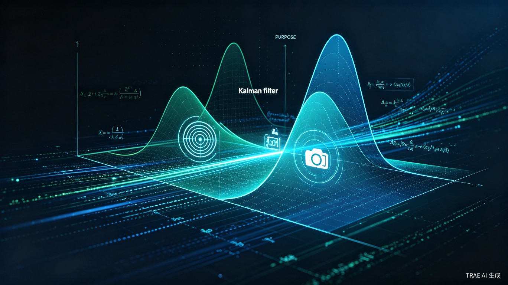
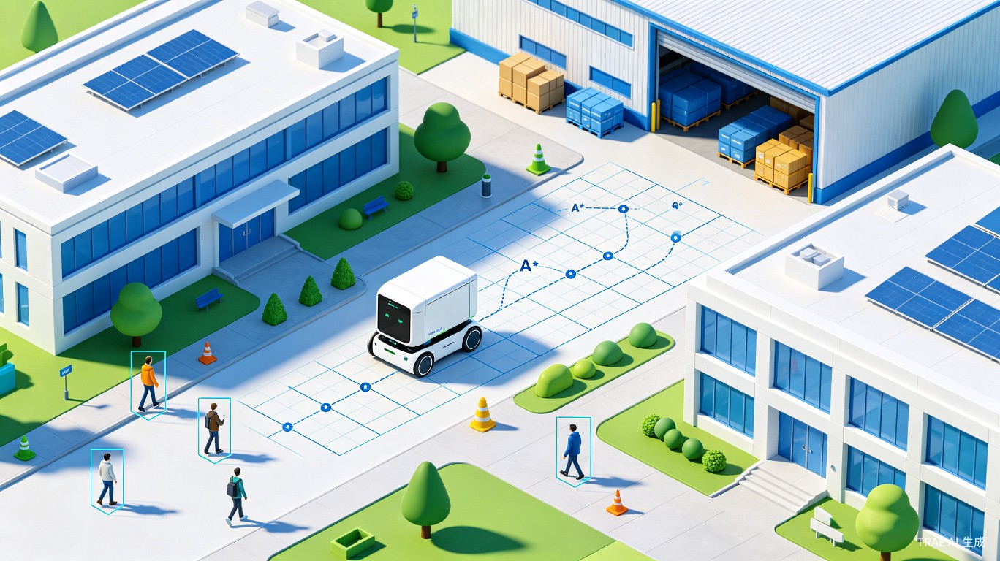
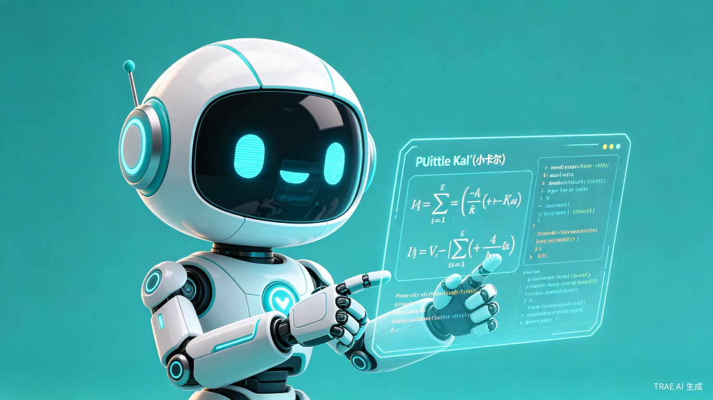
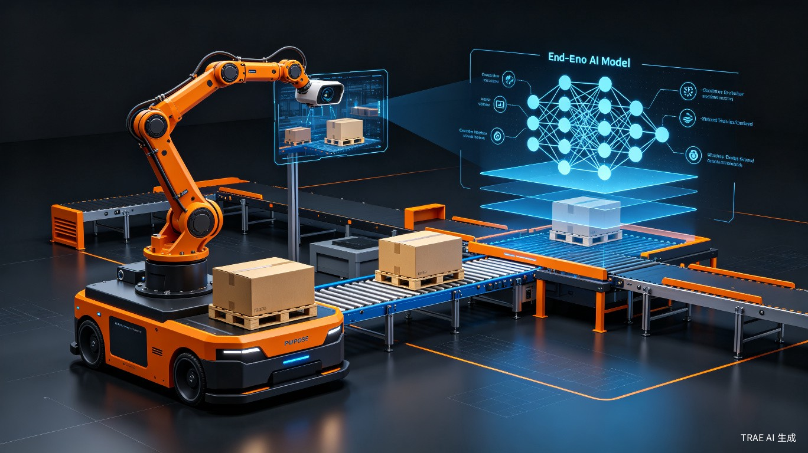

面向职业本科教育的无人驾驶AI算法交互式实验平台，
让抽象的数学原理可视化，让昂贵的实车实验"零代码"化
在日常教学中，我们发现《无人驾驶人工智能技术》课程存在三大核心痛点，严重制约了人才培养质量
学生对着书本学习卡尔曼滤波、泰勒级数非线性化等数学原理时，感觉抽象、枯燥，无法建立这些理论与"车辆实际定位"或"轨迹规划"之间的直观联系，导致"知其然，不知其所以然"。
传统实训依赖昂贵的实车或复杂的仿真环境搭建，学生往往将大量时间花在环境配置上，而非核心算法的调试与验证，导致动手实践能力不足，难以掌握从"算法"到"控制指令"的完整流程。
学生不清楚学到的感知、定位、规划、控制等模块，在真实的园区物流、港口作业、校园接驳等产业场景中是如何协同工作的，导致学习目标不明确，与产业需求"两张皮"。
西安汽车职业大学职业本科大三的人工智能工程技术专业学生
处于从理论学习向工程实践过渡的关键阶段，需要大量动手实验来巩固知识
在实践教学场景下，学生缺乏一个能即时交互、可视化推演、并关联产业案例的"算法实验场"
如果没有本产品，学生将难以攻克抽象数学原理，无法快速内化算法逻辑
知行驾驶舱-AI 不仅是一个教学工具，更是连接理论与产业、降低教育门槛的桥梁
学生无需配置复杂的Gazebo仿真环境，在Web端即可通过拖拽式参数调节，实时观察车辆行驶轨迹、定位精度曲线的变化。
将产业界的真实案例进行教学化改造，封装为可交互的"算法挑战"。学生像"闯关"一样完成任务。
紧贴"三阶递进、双轨并行"的教学体系设计，实现从虚拟到现实的平滑过渡。
一个Web平台即可服务一个班级甚至更多学生，极大地降低了对高算力硬件和昂贵实车的依赖成本。
三大核心模块构成完整的算法实验与教学闭环

将抽象的数学原理转化为可交互的可视化推演，让学生"看见"算法的运行过程。

基于真实产业场景的算法闯关任务，从感知到决策到控制的完整链路实践。

内置AI助手，结合当前实验场景进行解释，推荐相关源码与论文，实现知识闭环。

直观对比端到端模型（如UniAD）与传统模块化方案的区别与适用场景。
零代码、拖拽式参数调节，实时观察算法运行效果
调节噪声参数，观察滤波器如何"过滤"掉测量噪声，使估计值收敛到真实值。
选择控制算法并调节参数，观察虚拟车辆如何从"画龙"到稳定跟踪目标轨迹。
基于真实产业场景的"闯关式"算法实验
给定地图（A*规划全局路径），设计感知-决策-控制完整流程
任务目标：使车辆从A点安全行驶到B点，途中需识别并避让动态障碍物。
学生需理解各模块的输入输出关系，并学会在仿真环境中调试验证。
调用简化版端到端模型，理解模块化与端到端的区别
任务目标：输入视觉信息，观察模型如何直接输出控制指令（转向、速度）。
对比模块化方案，理解端到端模型的优势与局限性。
flowchart TB
subgraph PERCEPTION["感知模块 Perception"]
CAM["摄像头 Camera"]
LIDAR["激光雷达 LiDAR"]
YOLO["YOLO目标检测"]
PCL["点云处理"]
end
subgraph LOCALIZATION["定位模块 Localization"]
GPS["GPS信号"]
IMU["IMU惯性测量"]
KF["卡尔曼滤波器"]
POSE["位姿估计"]
end
subgraph PLANNING["规划模块 Planning"]
ASTAR["A*全局规划"]
DWA["DWA局部规划"]
MPC["MPC轨迹优化"]
end
subgraph CONTROL["控制模块 Control"]
PID["PID控制器"]
LQR["LQR控制器"]
CMD["控制指令"]
end
subgraph VEHICLE["车辆执行 Vehicle"]
STEER["转向系统"]
THROTTLE["油门/制动"]
end
CAM --> YOLO
LIDAR --> PCL
YOLO --> FUSION["数据融合"]
PCL --> FUSION
GPS --> KF
IMU --> KF
KF --> POSE
FUSION --> ASTAR
POSE --> ASTAR
ASTAR --> DWA
DWA --> MPC
MPC --> PID
PID --> CMD
CMD --> STEER
CMD --> THROTTLE
style PERCEPTION fill:#1a2a44,stroke:#00d4ff,stroke-width:2px,color:#e8edf5
style LOCALIZATION fill:#1a2a44,stroke:#00ff9d,stroke-width:2px,color:#e8edf5
style PLANNING fill:#1a2a44,stroke:#ffa502,stroke-width:2px,color:#e8edf5
style CONTROL fill:#1a2a44,stroke:#ff6b35,stroke-width:2px,color:#e8edf5
style VEHICLE fill:#1a2a44,stroke:#8a9bb5,stroke-width:2px,color:#e8edf5
你的24小时无人驾驶AI学习助手，实现从理论到实践的知识闭环
当学生提问"为什么这里要用泰勒展开？"时，小卡尔会结合当前实验场景进行解释，而非给出脱离上下文的通用答案。
自动推荐相关的学术资源，如UniAD、DriveAdapter等前沿论文，以及对应的开源代码仓库链接。
当学生在实验中遇到异常（如滤波器发散、控制器震荡），小卡尔可分析可能的原因并给出调试建议。
根据学生的学习进度和薄弱环节，推荐针对性的练习和挑战任务，实现自适应学习。
从虚拟仿真到实车部署，再到校企项目的完整能力培养路径
学生在Web端完成核心算法的参数调节与效果验证，建立对算法行为的直观认知。所有实验数据可一键导出，为后续实车调试提供基准参数。
将已在仿真环境中验证的算法参数，通过API对接或配置文件导入的方式，部署到实验室的自动驾驶小车上，进行真实环境的调试与优化。
参与校企合作的综合项目，在真实的园区物流、港口作业等场景中，完成从需求分析到系统部署的完整工程实践。
| 对比维度 | 传统教学方式 | 知行驾驶舱-AI |
|---|---|---|
| 环境配置 | 需安装ROS、Gazebo、CUDA等，耗时数小时至数天 | 零代码，Web端即开即用，无需任何环境配置 |
| 算法可视化 | 依赖静态PPT或板书，难以展示动态过程 | 交互式图表实时推演，"看见"算法运行过程 |
| 参数调试 | 修改代码 -> 编译 -> 运行 -> 观察，循环耗时 | 拖拽式参数调节，秒级反馈效果 |
| 产业关联 | 课本案例脱离实际，学生不知学了有何用 | 真实产业场景封装为挑战任务，学以致用 |
| 答疑支持 | 依赖教师 office hour，响应不及时 | AI学伴24/7在线，结合场景智能答疑 |
| 硬件成本 | 每名学生需配备高算力工作站或实车 | 一个Web平台服务全班，大幅降低硬件依赖 |